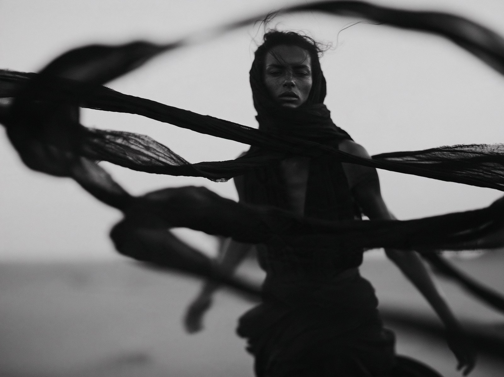
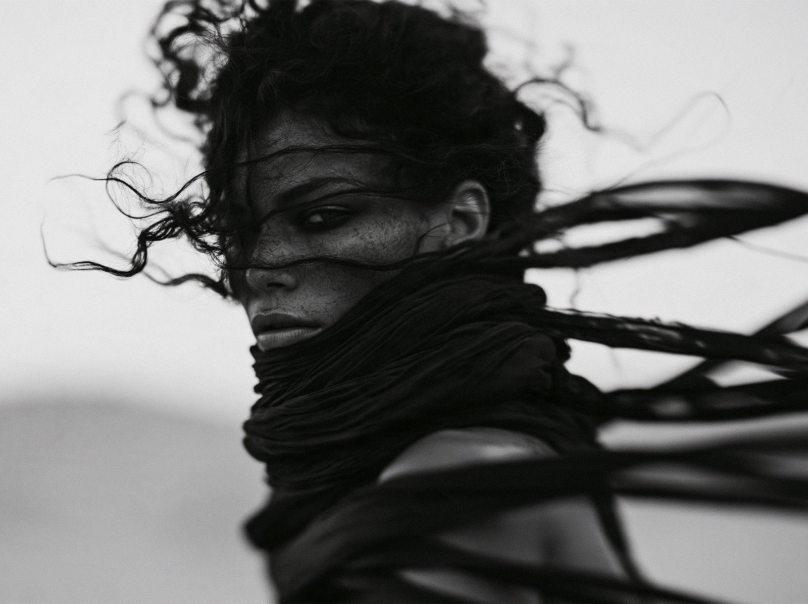
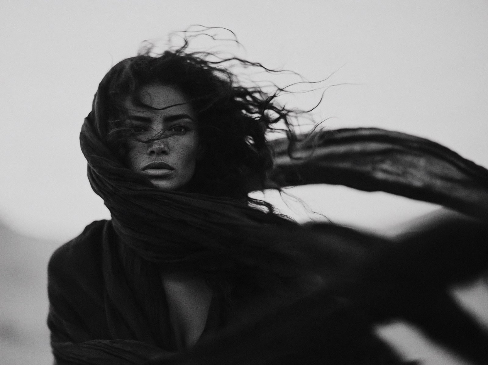

黑白风之舞
黑白摄影中，女子被飘动的黑布缠绕，浅景深和颗粒感。作者公开 profile 和提示词。
| 作者 | Michael Rabone @michaelrabone |
|---|---|
| 平台 | X |
| 模型 | Midjourney |
| 点赞 | 101 |
| 发布 | 2026-10-07 |
| 画风 | 黑白影像 |
| 地域氛围 | 无明显地域 |
| 题材 | 时尚美妆 |
| 情绪 | 紧张刺激 |
提示词 · 来自正文
Black and white cinematic wide open photography of a woman, her head and body are wrapped only in long black ribbons blowing in the desert wind --ar 16:9 --raw --profile dnmiwx7 --stylize 250 --hd --v 8.2